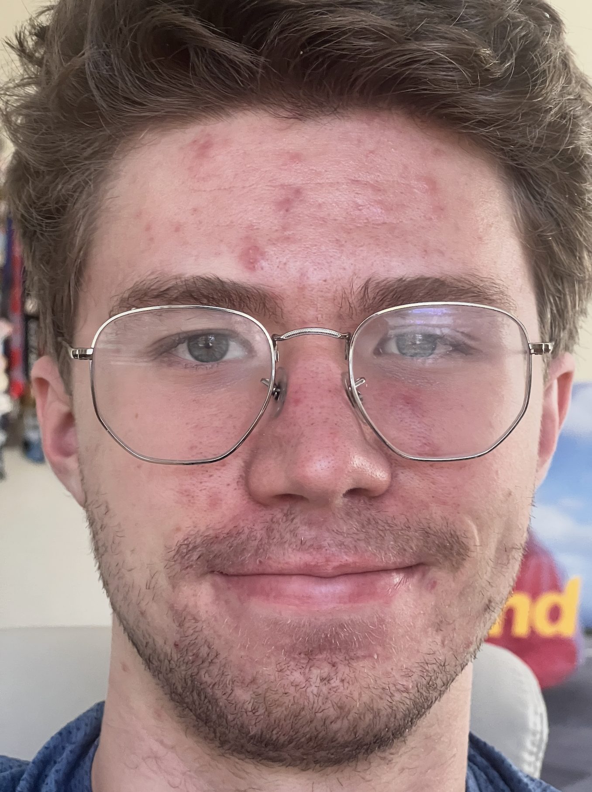
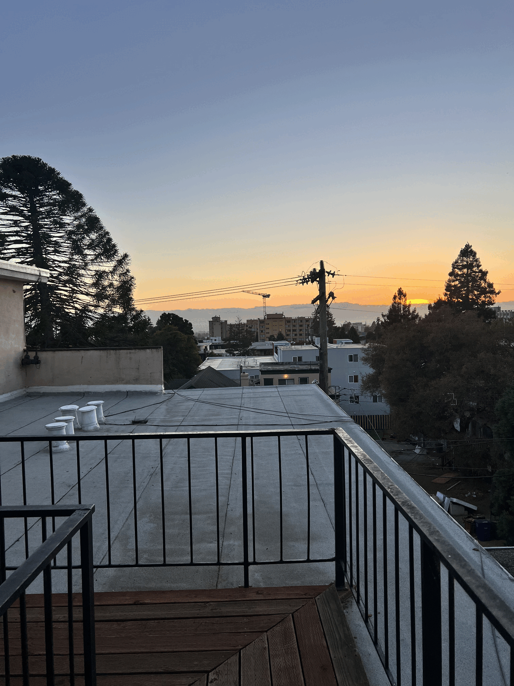

Project 0: Photography & Perspective
Exploring focal length, architectural compression, and the dolly zoom effect.
1. Taking a Selfie: Perspective Distortion
Comparing a standard wide-angle selfie versus a zoomed-in telephoto shot. Notice how the wide angle distorts facial features (making the nose appear larger), while the zoom flattens the features for a more flattering portrait.

Wide (Regular)
Zoomed
2. Architectural Perspective Compression
Observing how distance and zoom affect the background size relative to the foreground. The zoomed shot compresses the scene, making the background building appear much closer and larger.

Regular View
Zoomed View
3. The Dolly Zoom
Recreating the famous "Vertigo" effect by moving the camera backward while simultaneously zooming in, keeping the subject size constant while warping the background perspective.

My attempt at the Dolly Zoom effect.